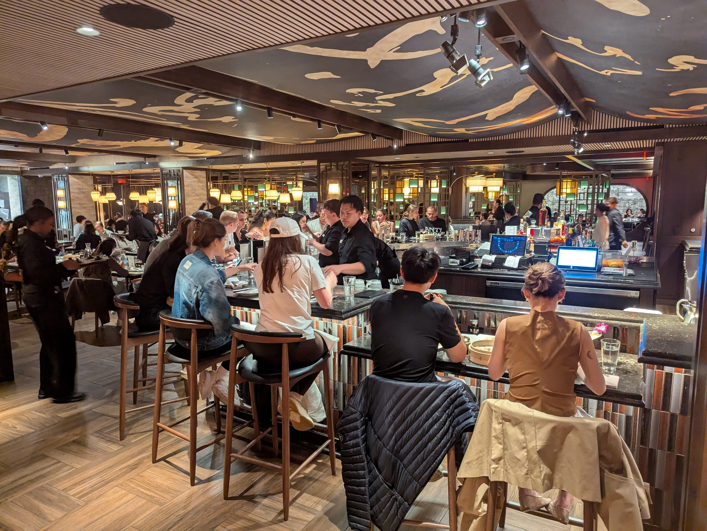

Din Tai Fung in New York City
Date: June 15, 2025 — New York City, New York
As a Taiwanese, I naturally have high standards when it comes to Taiwanese cuisine. Among all the restaurant chains from Taiwan, Din Tai Fung is probably the most famous one—especially known for its Xiao Long Bao (小籠包, soup dumplings) and fried rice.
In 2024, Din Tai Fung opened its first East Coast location in New York City, and I finally had the chance to try it. This location is also the only one that serves alcohol.
The interior design is beautiful. As you can see from the photos, the space draws from traditional Taiwanese housing styles, which carry influences from classical Chinese architecture.
They also have a very cute Xiao Long Bao statue:
The restaurant was packed. Without a reservation, it’s probably impossible to dine in. Even with a reservation, we waited around 20 minutes after check-in to be seated.

There’s a window where you can watch the chefs make Xiao Long Bao by hand:
We started with two cocktails: the pear lychee margarita (the one with the flower) and the yuzu martini. Both were sweet, refreshing, and nicely balanced.
After the drinks came out quickly, it took about 15 minutes for the appetizers to arrive, including the Taiwanese cabbage. That felt like a long wait, especially since appetizers are usually served within a few minutes. Still, both dishes were excellent. The appetizer was well-seasoned, and the cabbage had both wok hei and that satisfying crunch.

We ordered both the pork and the pork-crab Xiao Long Bao. To my surprise—and relief—they met the Taiwanese gold standard: thin, delicate skin and rich, flavorful soup inside. I’ve tried Din Tai Fung in Seattle and Toronto, but neither lived up to this standard. If you’re visiting NYC, I strongly recommend trying their Xiao Long Bao here.
Given how well the dumplings turned out, I expected the fried rice to be great too. We ordered the fried rice with pork chop. The pork chop was flavorful, with crispy skin—perfectly done. But the fried rice itself? Surprisingly disappointing. It lacked wok hei, was slightly too moist, and didn’t have much flavor on its own. Maybe it needed a pinch of white or black pepper. Or maybe the wok just wasn’t hot enough. It felt like they were trying to let the pork chop shine by keeping the rice bland, but I don’t think that approach worked. I had to mix in chili oil to get some fragrance and taste out of it.
To sum up: If you’re into Taiwanese cuisine and find yourself in NYC, go for the *Xiao Long Bao*. It’s one of the few places outside Taiwan that really gets it right.
Article tags: Personal